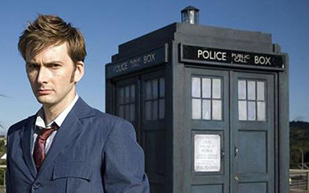
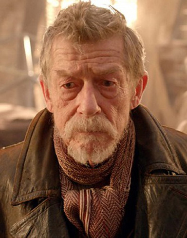

Dr Who premiered on November, 23rd 1963. At first it was met with little popularity, but quickley grew into something big! It became so big that it is generally considered to be a part of British culture. You are not british unless you know Dr Who. Now 50 years later in 2013, the show that is considered The Greastest Show in the Galaxy is celebrating its 50th anniversary. After years of budget cuts and cancellation threats it perservered where other shows would have failed.
The anniversary brought together the incumbant Doctor (played by: Matt Smith) along with his predecessor the 10th Doctor (David Tennant). As they face off against the shape shifting Zygons as they take the forms of their friends. They are also joined by the War Doctor, who is a form the Doctor would rather forget.
Matt Smiths 11th Doctor
David Tennants 10th Doctor
The climax of the episode goes into detail about a war on the Doctors homeworld of Galifferey against his sworn enemy, The Daleks and it talks about how the form he had during that war destroyed his own homeworld inorder to destroy his nemesis'. The 11th, 10th and the War Doctor stand together before activating the weapon that destroys the planet, the 11th explains to his predecessor that he wont be alone this time. However just like every Dr Who episode, a solution is found inorder to avoid the genocide.The gather all the Doctors from the past and use their collective powers to send Galifferey into an alternate demension.
John Hurts War Doctor
In the end the 10th and the War Doctors return to their own timelines, and the 11th learns that his plan of sending Galifferey into an alternate demention worked. After centuries of thinking his planet had been lost, and now finding out that it had actually been saved causes some hope to return to him. finally he sets off in search of new adventures knowing that his home is safe and sound.
Who knows what will come next? But it is for certain that it will be exciting and just as engaging as any other adventure.
source: Dr Who Wiki